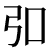

大真名子山〜小真名子山
17日までお盆休みを取っているので、16〜17日で久し振りにテント泊山行をやろうと思ったが、予報では17日に雨が降りそう。16日の日帰り山行に変更し、日光表連山の大真名子山、小真名子山に登ってきました。この2座に登るのは超久し振り、1985年以来、2回目。
桐生を深夜に車で出発。R122、R120を走り、三本松園地で一休みして、パンとペットボトル飲料の朝食を摂る。天気は晴れ。男体山を初めとして日光の山々が良く見える。車の外に出ると、早朝かつ標高1395mの高地なので、Tシャツ1枚では涼しいどころか寒い位だ。
光徳入口から裏男体林道に入り、カラマツ林と笹原の中の細い舗装道を上がって、梵字飯場跡の駐車場に車を置く。既に駐車が4台。車の外に出てもアブはいない。先日の武尊山とは大違いだ。この先の道は駐車禁止となっており、ロードコーンで通せんぼされている。


裏男体林道を歩き始める。すぐに、男体山から北麓に張り出した台地の縁の急な山腹をトラバースする道となり、大きく右回りに半円を描いて登って行く。樹林に覆われて眺めはないが、木立の切れ間から山麓の樹林帯や三岳が垣間見える。


巴橋を渡り、左回りのカーブとなって湯殿沢橋に差し掛かると、正面に大真名子山が見えて来る。少し先で林道分岐となり、左に太郎山への道を分ける。


カラマツやダケカンバ、ササの林の緩斜面を大きく蛇行して登り、ようやく志津乗越に着く。あちこちに「駐車禁止 二荒山神社」の看板があり、路側に大石や丸太が置かれている。ここから見上げる大真名子山は高くて急峻。大変そうな登りの前に、丁度良い丸太に腰掛けて休憩する。そのうちに、後続で若いお兄さんも到着。同じく、大真名子山に登るそうだ。


さて、大真名子山に向かって出発。登山道に入ろうとしたところで、露で濡れた笹が被さっていることに気がつく。雨具を出して、下ゴアを履くか。その間にお兄さんが先行。下ゴアを履いて登り始めたが、笹が濡れていたのは最初だけで、あとは大したことない。これは失敗した😅。道沿いに積雪期登山用のの標識が点々と設置されている。山岳信仰の石碑を過ぎ、程なく八海山神像に着く。大岩の上に立派な銅像が立ち、辺りを睥睨している。銅製の台座には「真精講」の文字がある。
（真精講とは、小俣の大川繁右衛門を中心として栄えた御嶽講で、桐生の御嶽山にも真精講が祀った石像、石碑がある。）
さらに、左の方にはこれまた大きくて立派な石碑が3基あり、それぞれ「弘要霊神 清波月照命」「徳霊神」「真霊神」と刻まれている（は弘の異体字）。


この先、笹はなさそうなので、下ゴアを脱いでから進む。すぐにコメツガ等の針葉樹林に覆われた急斜面に取り付き、ほぼ一直線に登ってグングン高度を上げる。途中、凄い速さで登る若者二人組に追い越される。今日は何故か若いハイカーさんばかりに遭うな。
古い鎖が張り流された坂を登ると、なだらかな稜線上に着く。ここで一休み。樹林の間から吹き上がって来る風が涼しくて気持ち良く、下界の酷暑を忘れる。


針葉樹林に覆われた稜線を絡んで登る。下生えの苔が瑞々しくて綺麗だ。程なく、稜線の大岩の上に建てられた三笠山神像を見る。これも立派な銅像だ。


さらに稜線を絡んで登ると短い鉄梯子がある。稜線上から眺めの開ける場所があり、戦場ヶ原を隔てて日光白根山が眺められる。振り返ると男体山がどっしり聳え、志津乗越を遥か下に見おろす。このあと、鉄梯子や鎖場が現れ、この辺りが日光三険の一つ「千鳥返し」らしいが、拍子抜けする程、なんともない（三険の残りは太郎山の「新薙」と女峰山〜帝釈山の間の「馬の背渡り」）。


稜線を覆う樹林が低くなって来て、梢越しに日光市街や足尾山地の低山を俯瞰する。下界はもわっとした靄に包まれて、見るからに暑そう。やがて、木の祠が見えて来て、大真名子山の頂上に登り着く。


祠（御嶽神社）の裏手の大岩の上に座王権現像が建つ。その奥の岩場では快速二人組がストーブを使って食事中。頂上は低い樹林に囲まれているが、岩の上に立つと日光白根山や温泉ヶ岳、太郎山、小真名子山、女峰山、男体山など、日光の主な山が一通りが眺められる。なお、大真名子山の三角点標石は、ここから北西70mくらい先のピークにあるようだが、密な樹林に覆われて道はなさそう？なので、行くのは止めておく。

手前が三角点ピーク

背後の山は小真名子山


休憩して展望を楽しんだのち、小真名子山に向かう。針葉樹林の中を緩く下ると、シャクナゲも現れる。


程なく右斜面が崩壊した薙の上端に出て、帝釈山から女峰山にかけての稜線が良く眺められる。薙を見おろすと、赤土が露出し、雨裂が走る急斜面が遥か下まで続いていて、崩壊っぷりが凄まじい。


木の間から小真名子山をチラ見すると、道は急斜面の下りとなり、苔が下生えの針葉樹林の中、鞍部に向かってドンドン下る。向かいの小真名子山は、見る見る高くなって、あれを登るのかと思うとがっくし来る。


大真名子山から標高を約250mも失って、「鷹の巣」と称する鞍部に下り着く。道標あり。辺り一帯は鬱蒼とした樹林に覆われているが、ここだけぽっかりと明るく開け、行く手には小真名子山、振り返れば大真名子山ののっそりと高い山容を仰ぐ。


水を飲んで休憩したのち、小真名子山への登りに取り付く。大真名子山からの下りと同じ様な、針葉樹林に覆われた急斜面を直登する。ようやく傾斜が緩み、なだらかな稜線上に登り着く。あとは稜線をひと登りして、小真名子山の頂上に着く。


頂上には石祠がある。樹林に囲まれて、眺めは南に大真名子山と男体山、東に帝釈山と女峰山が見えるくらい。女峰山が見える位置に腰を下ろして、昼食にする。まずは鯖味噌と缶ビール。それから、カップ麺のCOOPヌードルカレーを食べる。


昼食を終えて歩き出すと、すぐに樹林を抜けて開けた緩斜面に出て、ここに三角点標石と電波反射板がある。なんだ、こっちで休憩すれば良かった。西には日光白根山と太郎山を望み、東には帝釈山と女峰山がさっきより良く見える。北には鬼怒川源流域の山並みが広がり、その中に川俣湖の湖面が鈍く光っている。

電波反射板


ここから樹林に入って下ると、ガレ場の上端に出る。正面にスックと聳える帝釈山を眺めながらガレ場を下る。傾斜が急な上に足元が不安定で、慎重に下る。さらに、左右に振り分けられたガレ場の間の、樹林が残った尾根を下る。


途中に「←小真名子山 富士見峠→」との道標があり、振り返って下って来たガレ場を見上げると（写真では分からないが）非常に急だ。


脆くてガラガラの踏み跡を下る。途中、トラロープが張られている。樹林とガレ場の間を出たり入ったりして下ると、最後に長いガレ場に出る。目印の黄色ペイントの丸が描かれた岩がほぼ一直線上に点々と遥か下まで続いている。これはなかなか壮観。
ガレで滑らないように注意しながら下る。正面に帝釈山の端正な山容が終始見えているが、見ながら下るとズルッと滑り、気が抜けない。ようやくガレ場を下り切る。振り返ると小真名子山の頂は遥か上で、いやー凄いところを下ってきたもんだ。
平坦な樹林を抜けると、草地とガレの平坦地となって開けた富士見峠に着く。ここで実質的な山歩きは終わりで、あとは駐車地点まで長い林道歩きが残る。直進すると帝釈山、左は旧栗山村（現日光市）野門への道だ。どちらも一度歩いてみたい。


一休みしたのち、南へ、野州高原林道を下る。林道と言っても荒廃して路面は石ゴロゴロ、軽四駆以外の車両の走行は無理で、山道とあまり変わらない。樹林に覆われ、展望に乏しい。途中、「大真名子コメツガ希少個体群保護林」という看板がある。「原生林に準ずる亜高山性針葉樹林で、コメツガが優先し、オオシラビソ、シラビソが混在し、学術上及び森林施業上の考証として貴重な保護林です。」とのこと。確かに針葉樹林は見事だ。


トラバース
数回、大きくジグザグを切って下る。カーブミラーが設置され、舗装された区間もあるが荒廃している。やがて、ガレて崩壊が激しい沢を横断する。この沢は、大真名子山の頂上の先で上端を通過した薙の下流らしい。この辺りまで重機が入った跡があり、何やら工事中の模様。少し下ったところに現場事務所のプレハブが建ち、看板に「R4大真名子東沢砂防堰堤工事」と書いてある。工期はR6年11月末まで。
この辺りから、左手に帝釈山と女峰山が高々と見える。やがて馬立に到着。道標があり、左に女峰山、日光市街への登山道を分ける。前回、大真名子山〜小真名子山を登ったときは、ここから日光市街に下った。とても長い下山路で、そのことは印象に残っている。


ダケカンバとササの林の緩斜面をトラバースして緩く下って行く。行く手に男体山の東斜面が見えて来て、志津乗越までの距離の見当が付く。テコ棒河原に架かる第二号橋を渡り、程なく野州原林道、志津林道との三叉路に着く。


右の志津林道を辿ると緩い登りとなり、陽が差して暑いこともあり、少々しんどい。閉鎖されたゲートを過ぎ、ダケカンバとササに覆われた山腹をトラバースする。にわかに上空に灰色の雲が広がり、少し涼しくなって助かる。ポツポツと雨粒が落ちて来たが、すぐに止やみ、志津乗越に着く。


駐車地点まで、まだ、長い林道歩きが残っている。ようやく駐車地の梵字飯場跡に帰着。富士見峠から林道歩きは、景色や雰囲気は高山的でなかなか良いけれど、約3時間もかかって、やはりちょっと長かった。


帰りはまず光徳温泉日光アストリアホテルに立ち寄る。しかし、日帰り入浴は15:00まで。とっくに過ぎていました、残念。せっかくなので、光徳牧場の売店でアイスクリームを買って賞味する。ここはリゾートで、観光客が多い。
帰途につき日光市街に下る際、いろは坂の下の方でのろのろ運転となった。そう言えばすっかり忘れていたが、以前なら、夏の日光の混雑具合は半端ない。今回、さほどでないのは、やはりコロナの影響だろう。日帰り入浴で、やしおの湯に立ち寄る。洗い場は混んで空きを待ったが、湯船はゆったり浸かれる。汗を流してさっぱりしたのち、R122を経由して帰桐した。なお、この日の桐生の最高気温は36.8℃に達していた。